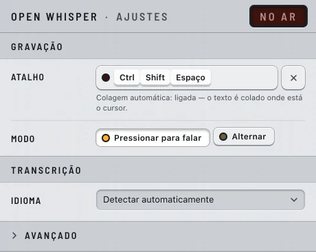
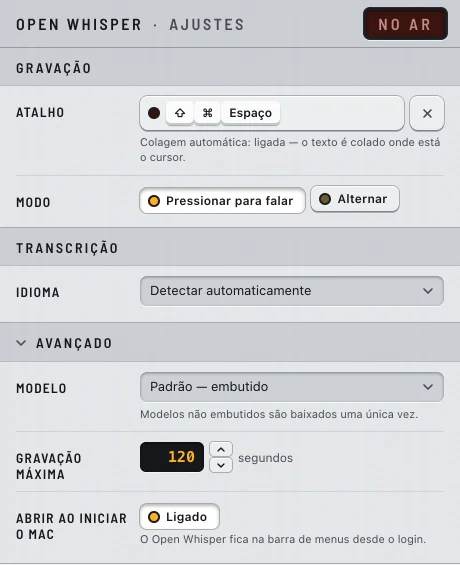

O Open Whisper funciona com o que vem de fábrica; o atalho é a única coisa que você talvez queira mudar. Esta página percorre a janela de ajustes campo por campo, na ordem em que eles aparecem: Gravação, Transcrição e, por fim, Avançado.
Abrir e salvar
- Abra o menu do Open Whisper: clique no ícone dele na barra de menus (Mac) ou na área de notificação (Windows).
- Escolha Ajustes….
Mac
A janela se chama Ajustes. Feche com Esc, ⌘. ou ⌘W.
Windows
A janela se chama Configurações. Feche com Esc ou CtrlW.
Se o Windows estiver bloqueando o microfone, o topo de Gravação diz O Windows está bloqueando o microfone, e o ditado só ouve silêncio. Libere em Configurações → Privacidade e segurança → Microfone, inclusive para aplicativos da área de trabalho. A tecla Abrir as Configurações do Windows leva à página onde ele é liberado.
- Não existe botão de salvar. Cada mudança vale no momento em que você a faz, e o próximo ditado já usa.
- A janela se ajusta ao conteúdo e nunca rola. Tudo nela funciona pelo teclado: Tab passa de um campo para o outro.
- Quando a janela volta para a frente, ela lê de novo a permissão de colagem e o item de início, então o que você mudou nos ajustes do sistema aparece aqui.
Gravação
Atalho
A tecla desta linha mostra o atalho que começa um ditado. O padrão é ⇧⌘Espaço no Mac e CtrlShiftEspaço no Windows. Ele funciona com qualquer app na frente e não precisa de permissão nenhuma. Para trocar, veja O gravador de atalho, logo abaixo.
Embaixo do atalho, uma linha diz se o texto é colado por você:
- Colagem automática: ligada — o texto é colado onde está o cursor.
Mac
- Colagem automática: desligada — o atalho funciona, e o texto vai para a área de transferência para você colar com ⌘V.
Clique em Ativar… para dar a permissão de Acessibilidade. Onde o texto vai parar explica o que ela faz e o que não faz.
Windows
O Windows não pede permissão para colar, então a linha sempre diz que está ligada. Quando o texto não pode ser colado (uma janela de administrador, um campo de senha), ele fica na área de transferência: veja Onde o texto vai parar.
Modo
- Pressionar para falar (o padrão): grava enquanto você segura as teclas e transcreve ao soltar.
- Alternar: aperte uma vez para começar e outra para parar.
Escolha Alternar para ditados longos, quando segurar as teclas cansa. O Encerrar após silêncio, em Avançado, só existe nesse modo. Ditar mostra os dois modos em uso.




O gravador de atalho
- Clique na tecla do atalho, ou chegue nela com Tab e aperte Espaço ou Enter. Ela passa a mostrar Pressione o atalho….
- Pressione a nova combinação, todas as teclas juntas. Ela é salva assim que fica completa.
- Para desistir, aperte Esc ou Delete (Backspace no Windows) antes de terminar. Sair do campo tem o mesmo efeito. O atalho anterior continua valendo.
Um atalho é uma tecla modificadora mais uma tecla. Essa tecla pode ser uma letra, um número, de F1 a F24, uma seta, Espaço, Enter, Tab ou um destes sinais: . , / \ - = [ ] ' ; e o acento grave.
Mac
O atalho precisa ter ⌘, ⌃ ou ⌥. Só o ⇧ não conta. Sem uma delas, o gravador avisa: Inclua ⌘, ⌃ ou ⌥ no atalho.
Windows
O atalho precisa ter Ctrl ou Alt. Só o Shift não conta. Sem uma delas, o gravador avisa: Inclua Ctrl ou Alt no atalho. A tecla Windows é recusada: A tecla Windows não pode fazer parte do atalho. Use Ctrl, Alt ou Shift.
Uma tecla de função sozinha (por exemplo F5) também não vale como atalho: junte uma modificadora a ela.
Quando o atalho já tem dono
O sistema guarda algumas combinações para si. Se você gravar uma delas, o Open Whisper avisa e passa a escutar um atalho reserva no lugar.
Mac
O aviso diz … é reservado pelo macOS., com o seu atalho no começo. O atalho reserva é ⇧⌘D. Reservados: ⌘Espaço, ⌃Espaço, ⌃⌥Espaço, ⌘Tab, ⇧⌘3, ⇧⌘4, ⇧⌘5, ⌘Q, ⌘W.
Windows
O aviso diz … é reservado pelo Windows., com o seu atalho no começo. O atalho reserva é CtrlShiftD. Reservados: CtrlAltDel, CtrlShiftEsc, CtrlEsc, CtrlEspaço, AltTab, AltShiftTab, AltF4, AltEspaço, AltEsc.
Se outro app já usa a combinação, o aviso é Não foi possível registrar …. Embaixo de qualquer um dos avisos, Manter fecha o aviso e Alterar arma o gravador de novo. Grave outro atalho. Enquanto isso, Iniciar Gravação, no menu do Open Whisper, continua começando um ditado, e esse item do menu mostra o atalho que está valendo de fato.
Windows
O padrão CtrlShiftEspaço também é atalho no Word (espaço não separável) e no VS Code. Se você usa esses programas, grave outro. No modo Pressionar para falar, o Esc não consegue cancelar uma gravação feita segurando CtrlShiftEspaço, porque CtrlShiftEsc é do Gerenciador de Tarefas. Um atalho como CtrlAltEspaço cancela com CtrlAltEsc. Os detalhes estão em Ditar.
Transcrição
Idioma
Detectar automaticamente (o padrão) deixa o modelo reconhecer o idioma de cada ditado, então dá para trocar de idioma de um ditado para o outro. Você também pode fixar um entre 16 idiomas: Português, Inglês, Espanhol, Francês, Alemão, Italiano, Holandês, Russo, Chinês, Japonês, Coreano, Árabe, Hindi, Polonês, Turco, Ucraniano.
Se você fala sempre a mesma língua, fixe o idioma: a transcrição acerta mais do que com a detecção automática. A mudança vale a partir do próximo ditado. A janela de vídeo também usa este ajuste.
Avançado
Clique em Avançado para abrir a seção. Ela tem quatro opções: Modelo, Gravação máxima, Encerrar após silêncio e a de abrir ao iniciar o computador, que tem uma seção só dela mais abaixo.
Modelo
O modelo de fala que transcreve os seus ditados. A lista mostra cada um com nome e tamanho: Padrão (embutido), Leve, Grande e Mais preciso. Embaixo dela: Modelos não embutidos são baixados uma única vez.
Escolher um modelo que não está no computador começa o download, com uma barra de progresso. Quando termina, o próximo ditado já usa o modelo novo, sem reiniciar nada. Se o download falhar, a janela diz Falha no download. O modelo atual continua em uso. e a escolha volta para a anterior. Modelos explica cada um e quando vale trocar.
Gravação máxima
Quanto tempo um ditado pode durar, em segundos: de 15 a 1800 (30 minutos). O padrão é 120. Digite um número ou use os botões de seta (um segundo por clique, dez com o Shift apertado). Um número fora da faixa volta para dentro dela.
Quando uma gravação chega ao limite, ela para, e o que foi captado é transcrito e colado. A notificação diz Gravação interrompida no limite de tempo — transcrevendo o áudio capturado. Aumente o limite se ele está cortando os seus ditados longos.
Encerrar após silêncio
Só aparece no modo Alternar. Vem desligado. Aperte Ligado para ativar: o mostrador começa em 2 segundos e, depois, lembra o último valor que você usou. Mude com as setas do teclado ou com os botões, de meio em meio segundo, de 1 a 10 segundos. Abaixo de 1 segundo, ele desliga.
Depois que você fala, esse tempo calado encerra a gravação. O silêncio antes da primeira palavra nunca encerra, nem as pausas mais curtas que o ajuste. O texto é colado como sempre. Se você apertar o atalho até 1,5 segundo depois de a gravação parar sozinha, o toque conta como o seu "parar" e não começa uma gravação nova.



Abrir ao iniciar
Esta opção abre o Open Whisper quando você entra no computador, para o atalho funcionar sem precisar abrir o app antes. Vem desligada. Aperte Ligado para ligar ou desligar.
Quem guarda essa escolha é o sistema, não o app: a tecla mostra sempre o que o sistema responde. Se você desligar nos ajustes do sistema, a janela mostra desligado na próxima vez que vier para a frente.
Mac
No Mac, a opção se chama Abrir ao iniciar o Mac. A dica embaixo: O Open Whisper fica na barra de menus desde o login. O macOS pode mostrar um aviso próprio dizendo que um item de início foi adicionado. Também dá para desligar em Ajustes do Sistema → Geral → Itens de Início.
A opção só funciona para uma cópia que está direto em /Applications (Aplicativos) ou ~/Applications. Não numa subpasta, não aberta de dentro do .dmg, não aberta da pasta Downloads.
| Mensagem | O que fazer |
|---|---|
| Mova o Open Whisper para a pasta Aplicativos para usar esta opção. | Saia do app, arraste-o para Aplicativos e abra de lá. |
| Falta aprovar o Open Whisper em Ajustes do Sistema → Itens de Início. | Clique em Abrir Ajustes do Sistema e ative o Open Whisper. |
| O macOS não encontrou o app. Confira em Ajustes do Sistema → Itens de Início. | Clique em Abrir Ajustes do Sistema e confira o item. |
| O macOS não aceitou a mudança. Tente de novo ou confira em Ajustes do Sistema. | Aperte a tecla de novo. |
| Não deu para ler o estado no macOS. | Feche os Ajustes e abra de novo. |
Windows
No Windows, a opção se chama Abrir ao iniciar o Windows. A dica embaixo: O Open Whisper fica na área de notificação desde que você entra no Windows. Também dá para desligar em Configurações → Aplicativos → Inicialização, ou na aba de inicialização do Gerenciador de Tarefas.
A opção só funciona para a cópia instalada pelo instalador.
| Mensagem | O que fazer |
|---|---|
| Instale o Open Whisper pelo instalador para usar esta opção. | Instale pelo instalador e abra essa cópia. |
| Desligado em Configurações do Windows → Aplicativos → Inicialização. Ative lá, ou aqui de novo. | Aperte a tecla de novo, ou clique em Abrir as Configurações do Windows e ative lá. |
| O Windows não encontrou o app. Confira em Configurações → Aplicativos → Inicialização. | Clique em Abrir as Configurações do Windows e confira o item. |
| O Windows não aceitou a mudança. Tente de novo ou confira em Configurações → Aplicativos → Inicialização. | Aperte a tecla de novo. |
| Não deu para ler o estado no Windows. | Feche as Configurações e abra de novo. |
Para voltar todos os ajustes ao padrão de uma vez, veja Dados e desinstalação.